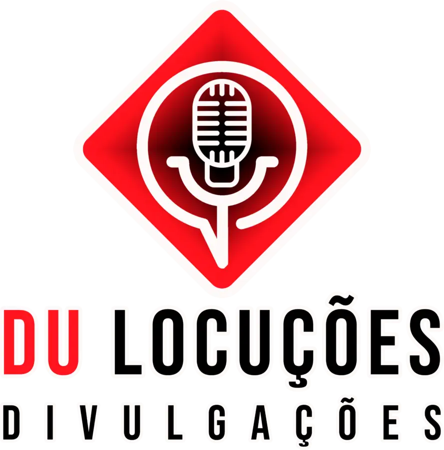
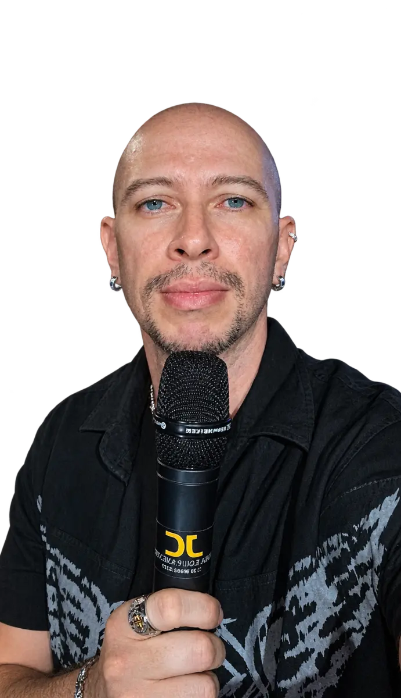

Atendimento personalizado
Cada projeto parte da necessidade real do cliente.
Nossa história
Da locução a soluções integradas em comunicação, criação e produção.

A história da DLD — Du Locuções Divulgações começou em 2017, em um período no qual Eduardo enfrentava dificuldades para conseguir emprego. Ao lembrar que sua voz sempre recebia elogios, ele começou a pesquisar como poderia utilizá-la para gerar renda em curto prazo. Foi assim que descobriu a locução em ações de porta de loja: bastava adquirir uma caixa de som e um microfone, produzir cartões de visita e apresentar o trabalho diretamente às lojas.
A princípio, a atividade seria apenas uma solução temporária, um “tapa-buraco” até surgir uma nova oportunidade profissional. Porém, já na primeira locução realizada em uma loja, Eduardo se apaixonou pela comunicação e percebeu que havia encontrado um caminho que poderia crescer. Em 2018, com a compra da primeira caixa de som, esse interesse começou a se transformar em trabalho.
Depois de uma pausa durante um período de trabalho em tempo integral, a pandemia abriu um novo caminho. A produção de vídeos promocionais com locução, utilizando as artes dos próprios clientes, levou a DLD a ampliar suas possibilidades.
Vieram as parcerias na área de design gráfico e, em seguida, o aprendizado em criação e edição. Com o apoio de fornecedores especializados, a atuação cresceu também para impressos, fachadas, banners, adesivos e outras soluções de comunicação visual.
A marca, que anteriormente utilizava o nome Du Locuções — Locutor Publicitário, retomou suas atividades com força em 2024 e evoluiu para a atual DLD — Du Locuções Divulgações.
Hoje, a DLD é uma empresa independente e multifuncional, reunindo locução, eventos, humor, produção de áudio, audiovisual, design, publicidade e comunicação visual. Cada trabalho recebe atendimento próximo e uma solução pensada para a necessidade de cada cliente.
Cada projeto parte da necessidade real do cliente.
Voz, criação e produção reunidas em um só lugar.
Atuação em Americana e cidades da região.

Eduardo Alves da Silva
À frente da DLD, Eduardo Alves da Silva reúne criação, produção e apresentação em uma atuação versátil: mestre de cerimônias, locução, humor, contação de histórias, criação de vozes e personagens, narração, dublagem, produção de áudio, design gráfico, identidade visual, criação digital, conteúdo para redes sociais, sites, roteiros, gravação e edição audiovisual, publicidade e comunicação visual.
Eduardo desenvolve pessoalmente cerca de 80% dos trabalhos da DLD, do planejamento à execução. Os aproximadamente 20% restantes são realizados com parceiros especializados, sob sua coordenação, para oferecer soluções completas com qualidade profissional e atenção a cada detalhe.
Com base em Americana — SP, desenvolve trabalhos personalizados para empresas, instituições, órgãos públicos, lojas e diferentes públicos.